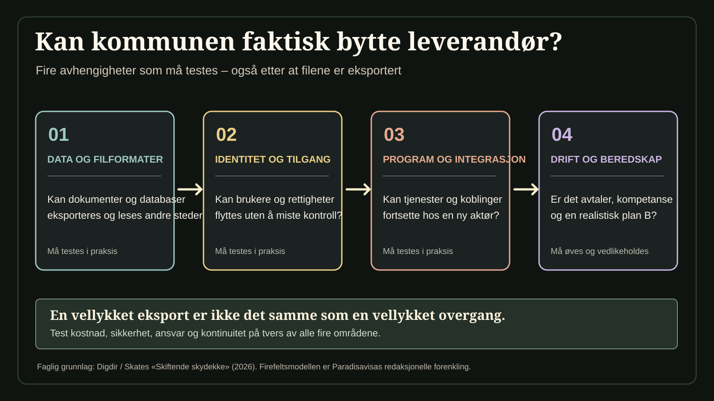

Kan Norden frigjøre seg fra teknologigigantene?
Norden og Baltikum er blant verdens mest digitaliserte samfunn. Nettopp derfor er vi blitt avhengige av noen få leverandører av systemene vi bruker for å arbeide, kommunisere og lagre informasjon. Nå har digitaliseringsministrene samlet seg om å styrke regionens digitale selvstendighet. Men betyr det nye offentlige alternativer – eller bare bedre kontroll med de gamle?

En offentlig ansatt åpner et dokument, deltar i et videomøte og lagrer arbeidsdagen i en skytjeneste. En kommune tar i bruk en ny KI-løsning. En skole og et sykehus er avhengige av at systemene deres kan snakke med hverandre. For brukeren virker dette som separate verktøy. Sett fra samfunnets side er det en sammenhengende infrastruktur for informasjon, kommunikasjon og beslutninger.
Hvem eier teknologien? Hvem kan endre vilkårene? Kan data flyttes uten at tjenestene stopper? Og hvem kan reparere systemet dersom leverandøren svikter?
Dette er ikke bare tekniske spørsmål. De handler om hvem som beholder handlefriheten når stadig mer offentlig virksomhet er digital.
Ministrene har erkjent avhengigheten
6. november 2026 vedtok digitaliseringsministre fra Norden og Baltikum en felles erklæring om digital suverenitet i København. Erklæringen sier uttrykkelig at regionen – i likhet med resten av Europa – er blitt for avhengig av et lite antall leverandører av digitale produkter, tjenester og kritisk infrastruktur.
Primærkilde: Nordisk ministerråds felles erklæring, vedtatt 6. november 2026. Erklæringen uttrykker politiske ambisjoner, ikke ferdig vedtatte teknologiprosjekter.
Det er en viktig politisk erkjennelse. Landene er sterke på å ta teknologi i bruk, men det betyr ikke at de selv kontrollerer grunnsystemene bak den.
Erklæringen peker på muligheter for samarbeid om skytjenester, sikring av undersjøiske kommunikasjonskabler, nye felles digitale løsninger og forskning. Den viser også til nordisk-baltisk samarbeid om elektronisk identitet og det felles KI-initiativet New Nordics AI.
Kilder: selve ministererklæringen og Nordisk ministerråds omtale. Listen beskriver mulige samarbeidsområder.
Dokumentet er samtidig en politisk intensjonserklæring, ikke en avtale om å erstatte bestemte amerikanske selskaper, bygge en ferdig nordisk nettsky eller innføre en offentlig kontorpakke. Det fastsetter heller ikke i seg selv hva slike prosjekter skal koste.
Digital suverenitet kan bety flere ting. En snever forståelse handler om hvor serverne står og hvilke lands lover som gjelder for databehandlingen. En bredere forståelse handler om evnen til å velge mellom leverandører, få tilgang til egne data i åpne formater, videreutvikle systemer og opprettholde samfunnskritiske funksjoner når noe går galt.
Det er lett å tro at et datasenter i Norge automatisk gjør en tjeneste norsk og uavhengig. Slik er det ikke nødvendigvis. Programvare, underleverandører, juridiske avtaler, drift, sikkerhetsoppdateringer og kontroll over identitetssystemer kan fortsatt ligge andre steder. På samme måte er en løsning med åpen kildekode ikke automatisk gratis eller trygg. Den krever kompetanse, vedlikehold, sikkerhetstesting og en organisasjon som tar ansvar.
Tre begreper som ofte blandes sammen: åpen kode, åpne standarder og kontroll
Åpen kildekode gir rett til å se, bruke, endre og dele kode på vilkår fastsatt av en åpen lisens. Det garanterer ikke at noen vedlikeholder løsningen eller at den har nødvendige sikkerhetskontroller.
Åpne standarder kan gjøre det lettere å flytte data og få systemer til å samhandle, men det må testes at formatene og grensesnittene faktisk fungerer.
Digital suverenitet handler her om valgfrihet, reell kontroll og robusthet. Å ha serverne i Norge alene løser ikke spørsmål om eierskap, leverandøravtaler eller beredskap.
Kilder: Digdir om åpen kildekode og den nordisk-baltiske erklæringen. Begrepsforklaringen er redaksjonell.
Det relevante spørsmålet er derfor ikke om Norden kan stenge verden ute. Det er om de nordiske og baltiske landene kan beholde reelle alternativer og kontroll over de viktigste funksjonene, også når de handler teknologi på et internasjonalt marked.
En praktisk måte å prøve ambisjonen på, er å se på verktøyene offentlig sektor bruker hver eneste dag: tekstbehandling, regneark, dokumentdeling, e-post, videomøter, identitetskontroll, arkiv og KI-assistenter.
Kunne landene utvikle, finansiere eller bestille et felles grunnsortiment for slike oppgaver? Et alternativ trenger ikke å være fullstendig nytt eller produsert av staten alene. Åpne standarder, offentlig styrte felleskomponenter, åpne programvareprosjekter og konkurranse mellom uavhengige leverandører kan være ulike veier til mindre avhengighet.
Men hvert valg skaper nye spørsmål. Hvem sørger for universell utforming? Hvem holder programvaren sikker? Hvordan sikres språkene i regionen? Hvordan flytter man dokumenter uten å miste formatering, tilgangsstyring eller historikk? Og kan en nordisk leverandør klare oppgaven like godt og rimelig som de største internasjonale aktørene?
En felles bestilling fra flere land kan gi større marked og forutsigbarhet. Den kan også bli tungrodd og kostbar hvis den ikke starter med presise krav og prøver løsninger i liten skala. Det er nettopp disse avveiningene politikerne må svare på før «digital suverenitet» kan bli noe innbyggerne merker.
Fra ministererklæring til en norsk exit-plan
Dette er ikke bare en teoretisk diskusjon. En arbeidsgruppe for det offentlige digitaliseringssamarbeidet Skate presenterte høsten 2026 rapporten Skiftende skydekke om hvordan offentlige virksomheter kan unngå å bli låst til én skyleverandør. Da Digitaliseringsdirektoratet offentliggjorde rapporten 30. september, løftet det fram elleve punkter for en god exit-strategi. Arbeidsgruppen anbefaler å kartlegge tekniske avhengigheter, ha beredskapsplan for tap av tjenester og bruke åpne standarder og åpen kildekode der det kan redusere leverandørbinding.
Bakgrunn: Skate-rapporten Skiftende skydekke, 18. august 2026. Rapportens dato skilles fra Digdirs omtale 30. september.


Kan kommunen faktisk bytte system?
Utforsk en forenklet prøve på om alternativene er reelle. Dette er en redaksjonell modell basert på anbefalingene, ikke Digdirs offisielle 11-punktsliste.
Faglig bakgrunn: Skiftende skydekke og Digdirs omtale av exit-strategi. Trinnene og formuleringene er Paradisavisas pedagogiske forenkling.
Kilder: Digdirs omtale av elleve punkter, 30. september 2026 og hele Skate-rapporten. Rapporten gir anbefalinger, ikke nye juridiske plikter.
For en kommune kan prøven være svært konkret: Kan dokumentene tas ut i et lesbart format? Kan tilgangsstyring og nødvendige tjenester videreføres hos en annen leverandør? Vet kommunen hva et skifte vil koste, og hvilke kritiske tjenester som må fungere ved et avbrudd? Arbeidsgruppen understreker at muligheten til å bytte må vurderes praktisk, teknisk, økonomisk og juridisk. Å kunne eksportere filer er ikke nødvendigvis det samme som å kunne fortsette driften.
Skiftende skydekke er en faglig anbefaling, ikke et pålegg om å avslutte eksisterende avtaler eller et vedtak om en ny statlig skytjeneste. Hybrid- og multisky-løsninger kan øke handlingsrommet, men innebærer også kostnader og behov for kompetanse, koordinering og sikkerhetsarbeid. Det er et bedre utgangspunkt for å måle digital selvstendighet enn å telle hvor mange ganger politikere bruker selve ordet.
I sin norske pressemelding opplyser regjeringen at Norge skal prioritere trygg KI, digital sikkerhet og suverenitet når landet overtar formannskapet i Nordisk ministerråds digitaliseringssamarbeid i 2027. Digitaliseringsminister Torgeir Micaelsen peker på at et fåtall selskaper utvikler de mest avanserte KI-modellene.
Kilde: Digitaliserings- og forvaltningsdepartementet, 6. november 2026. Dette gjelder prioriteringer for det norske formannskapet i 2027.
Avhengigheten er sammensatt. Én leverandør kan kontrollere modellen, en annen skytjenesten den kjører på, en tredje dataene som mates inn, mens den offentlige virksomheten har ansvaret for at resultatet blir riktig. Hvis en offentlig tjeneste blir avhengig av dette systemet, er det ikke nok å spørre om KI-en svarer godt. Man må også vite hvordan beslutninger kan etterprøves, hvilke data som brukes, hvilke avtaler som gjelder, og hvordan løsningen kan skiftes ut.
Nordisk-baltisk samarbeid kan gi bedre krav til innkjøp, sikkerhet og åpne grensesnitt. Men en erklæring gir ennå ikke svar på hvem som skal bygge, drive og betale for alternativene.
Det finnes allerede mer konkrete forslag. I juni 2026 la Tekna, NITO og Forbrukerrådet fram anbefalinger om digital suverenitet i offentlig sektor. De ba blant annet om at offentlige anskaffelser legger større vekt på åpen kildekode, åpne standarder, interoperabilitet og muligheten til å flytte data. Det er organisasjonenes politiske forslag, ikke vedtatt norsk innkjøpspolitikk. Forbrukerrådets rapport Breaking Free fra februar argumenterte også for at offentlig innkjøpsmakt kan brukes til å støtte reelle alternativer til de største teknologiplattformene.
Partskilde: Forbrukerrådets felles utspill med Tekna og NITO, 23. juni 2026. Organisasjonenes anbefalinger er ikke vedtatt innkjøpspolitikk.
I et skriftlig svar til Paradisavisa 11. november understreker Forbrukerrådet at leverandøravhengighet er særlig viktig å redusere i systemer knyttet til kritisk infrastruktur. Organisasjonen vil ikke rangere bestemte offentlige tjenester, men mener at offentlig sektor som innkjøper bør styrke alternative leverandører. Den fremhever åpne standarder som en forutsetning for at data kan flyttes og ulike systemer fungere sammen, og viser til det felles utspillet med Tekna og NITO.
Forbrukerrådet tar ikke stilling til om staten bør utvikle en egen kontorpakke eller andre bestemte produkter. I svaret peker organisasjonen samtidig på risikoen ved offentlig egenutvikling: manglende stordriftsfordeler, svake kvalitetskrav og utilstrekkelige ressurser til sikkerhet, drift og vedlikehold. Den etterlyser tydelige myndighetsføringer som balanserer kostnader, sikkerhet, personvern og funksjonskvalitet. Svaret gir dermed støtte til mer digital valgfrihet, men ikke en blankofullmakt til én bestemt modell for offentlig teknologiproduksjon.
Det finnes også et nyere norsk forslag til felles praksis. 28. oktober 2026 la Digitaliseringsdirektoratet fram et utkast til nasjonal veileder for åpen kildekode i offentlig sektor. Forslaget sier at programvare utviklet for offentlige midler som hovedregel bør deles under åpen lisens når det er forsvarlig, og at offentlige virksomheter bør kunne gjenbruke og bidra til åpne prosjekter. Digdir ber om innspill innen 8. desember 2026. Dette er ikke en vedtatt lovregel eller et ferdig system. Digdir peker samtidig på behov for sikkerhet, personvern, vedlikehold og finansiering av åpne komponenter.
Kilde: Digdirs høringsutkast om åpen kildekode, 28. oktober 2026. Dette er et forslag med frist 8. desember, ikke en fastsatt nasjonal regel.
Hva har skjedd – og hva er fortsatt på høring?
Datoene viser dokumenterte milepæler. Framtidige prosesser er merket som planlagte.
Skate-rapporten publiseres
Arbeidsgruppen beskriver endringsevnen ved bruk av skytjenester og anbefaler tiltak mot uønsket leverandørbinding. Digdirs rapportsamling.
Digdir trekker fram 11 punkter
Direktoratet publiserer en oppsummering av råd om exit-strategi. Dette er faglige anbefalinger, ikke nye lovkrav. Digdirs oppsummering.
Utkast om åpen kildekode
Digdir legger fram et utkast til nasjonal veileder og inviterer til innspill. Digdirs innspillsside.
Nordisk-baltisk ministererklæring
Ministrene uttrykker felles ambisjoner om digital suverenitet. De vedtar ikke i seg selv en ferdig kontorpakke eller skytjeneste. Les erklæringen.
Frist for innspill om åpen kode
Fristen gjelder forslaget til veileder. Ingen endelig regel er vedtatt på grunnlag av høringen per 12. november. Digdir – frist og invitasjon.
Samtidig er ikke alternativene kostnadsfrie. En offentlig styrt løsning må ha et ansvarlig fagmiljø, oppdateringer, drift, sikkerhetsrevisjon, beredskap og tydelig ansvarsfordeling. Ambisjonene må derfor vurderes mot faktiske offentlige innkjøp, med sammenlignbare data om pris, drift, sikkerhet og muligheten til å bytte leverandør. En løsning blir ikke automatisk bedre fordi den er nordisk eller offentlig eid.
Et sikkerhetsspørsmål – ikke bare et markedsspørsmål
Nordisk råd vedtok i oktober en strategi for samfunnssikkerhet som anbefaler å kartlegge kritisk digital infrastruktur og utvikle felles krav til anskaffelser og leverandørstyring. Rådet peker også på behovet for samarbeid om mobilnett, satellitter og beskyttelse mot digitale påvirkningsoperasjoner.
Kilde: Nordisk råds strategi om digital motstandskraft, 28. oktober 2026. Sikkerhetsanbefalingene er ikke et bevis for at infrastruktur allerede er etablert.

Sikkerhet handler om mer enn å beskytte data mot innbrudd. Systemer må også kunne fungere under avbrudd, leverandørproblemer og internasjonale konflikter. Det kan innebære flere uavhengige driftsmuligheter, bedre lokale beredskapsplaner og muligheten til å eksportere informasjon i formater som andre systemer kan lese.
Å velge bort én dominerende leverandør er imidlertid ikke en garanti mot å få en ny. Offentlig samarbeid bør derfor måles etter om det øker innbyggernes og virksomhetenes faktiske valgmuligheter.
Den nordisk-baltiske erklæringen har som ambisjon å gjøre regionen mer digitalt integrert innen 2030. Hvor mye som kan oppnås, avhenger av hva regjeringene vil bevilge, hvilke standarder de velger, og om anskaffelsene faktisk legger til rette for alternativer.
På spørsmål fra Paradisavisa om hvilke fellesprosjekter som faktisk er besluttet, hvilke budsjetter og frister som gjelder, og hvordan offentlige alternativer kan innføres, svarte Digitaliserings- og forvaltningsdepartementet 10. november at departementet ikke hadde noen kommentar. Det er ikke en avvisning av ministererklæringen, men innebærer at departementet ikke har gitt avisen nye konkrete svar på gjennomføringen.
Det avgjørende spørsmålet er konkret: Hvilket digitalt verktøy kunne nordiske land samarbeide om å levere bedre allerede nå? Og hvordan kan resultatet måles etter sikkerhet, kostnader, tilgjengelighet og muligheten til å velge en annen leverandør?
Hva bør en kommune teste først?
Et frivillig leserspørsmål, ikke en representativ måling. Bare ditt eget svar lagres lokalt i nettleseren. Ingen fellestall eller prosenter vises.
Avstemningen trenger JavaScript og sender ikke svar til en server.
Du valgte:
Dette er bare ditt eget svar, ikke en samlet opptelling.
Det er der en stor idé om digital selvstendighet begynner å ligne en tjeneste samfunnet kan bruke.
Kilder og dokumentasjon
- Nordisk ministerråd, felles erklæring vedtatt 6. november 2026: «A common Nordic and Baltic approach to digital sovereignty». Erklæringen, ikke bare pressemeldingen, ligger til grunn for beskrivelsen av forpliktelser og begrensninger. https://www.norden.org/sv/declaration/common-nordic-and-baltic-approach-digital-sovereignty
- Nordisk ministerråd, 6. november 2026: Referat/pressemelding om enighet, avhengighet, prosjekter og New Nordics AI. https://www.norden.org/en/news/nordic-and-baltic-ministers-sign-joint-statement-increased-digital-sovereignty
- Digitaliserings- og forvaltningsdepartementet, 6. november 2026: Norsk prioritering ved formannskapet i 2027. https://www.regjeringen.no/no/aktuelt/nordisk-baltisk-samarbeid-om-digital-suverenitet-norge-vil-prioritere-trygg-ki/id3191990/
- Nordisk råd, strategi vedtatt 28. oktober 2026: «Digital resilience and information security», konkrete råd om kritisk infrastruktur, innkjøp og robusthet. https://pub.norden.org/politiknord2026-717/5-digital-resilience-and-information-security.html
- Forbrukerrådet, 23. juni 2026: Tekna, NITO og Forbrukerrådet la fram anbefalinger om åpne standarder, åpen kildekode og portabilitet for offentlig sektor. https://www.forbrukerradet.no/?p=54996
- Forbrukerrådet, skriftlig svar til Paradisavisa 11. november 2026: Faglig svar om kritisk infrastruktur, åpne standarder, offentlig innkjøpsmakt og risiko ved offentlig egenutvikling. Svaret er gjengitt etter innhold; originalkorrespondansen er arkivert i redaksjonen. Se også organisasjonenes offentlige felles anbefalinger.
- Forbrukerrådet, 27. februar 2026: Breaking Free – Pathways to a fair technological future. Forbrukerorganisasjonens analyse og anbefalinger, ikke en myndighetsbeslutning. https://www.forbrukerradet.no/rapporter/breaking-free-pathways-to-a-fair-technological-future/
- Digitaliserings- og forvaltningsdepartementet, svar til Paradisavisa 10. november: Departementet har ikke ytterligere kommentarer til spørsmål om prosjekter og gjennomføring. Kildekorrespondansen er arkivert i redaksjonen.
- Digitaliseringsdirektoratet / Skate-arbeidsgruppe, høsten 2026: Skiftende skydekke – anbefalinger om å redusere leverandørbinding og sikre reell endringsevne. Les rapporten hos Digdir
- Digitaliseringsdirektoratet, 30. september 2026: Publisering av rapporten og elleve punkter for gode exit-strategier; faglige anbefalinger, ikke nye lovkrav. Les Digdirs oppsummering
- Digitaliseringsdirektoratet, 28. oktober 2026: Utkast til nasjonal veileder for åpen kildekode, med innspillsfrist 8. desember. Digdirs invitasjon til innspill
- Digdir, 28. oktober 2026: Forslag om at offentlig finansiert kildekode bør gjøres åpent tilgjengelig når det er forsvarlig. Åpen kildekode som hovedregel